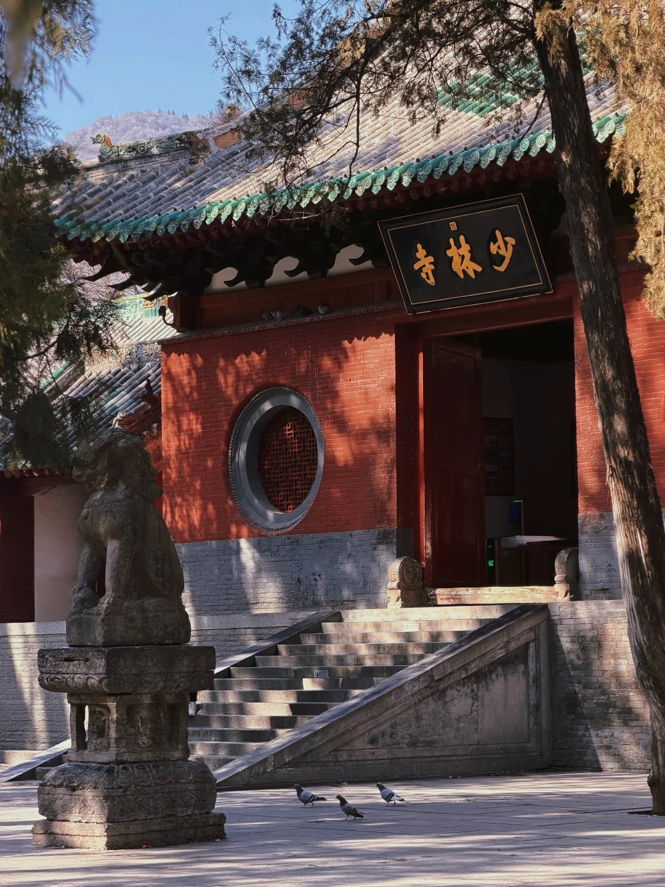
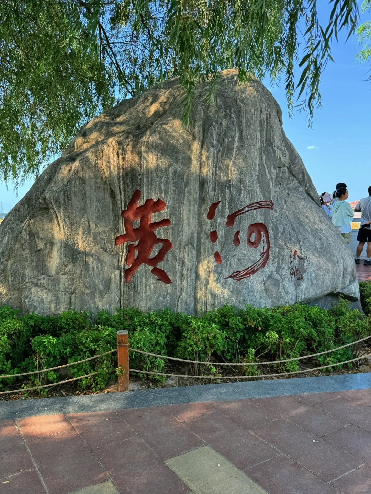
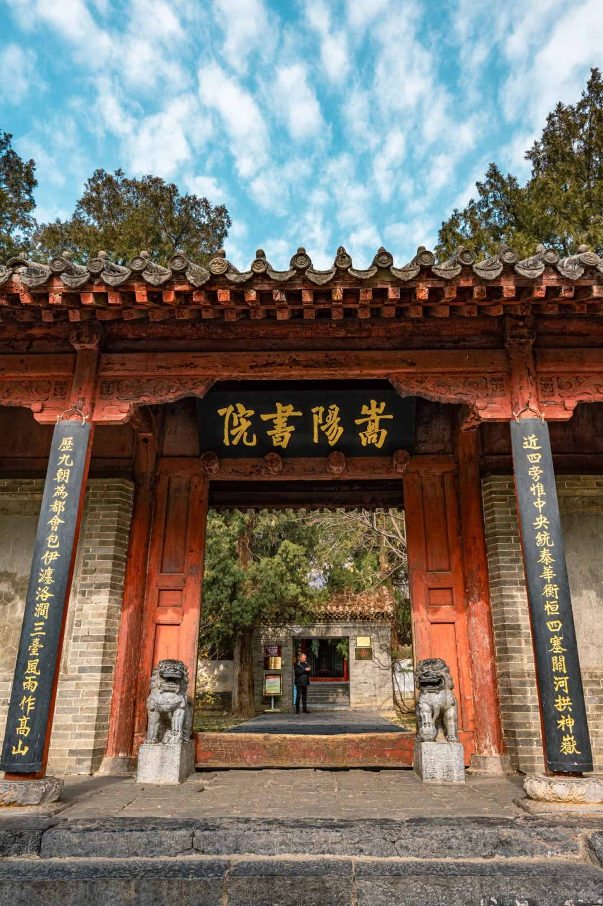
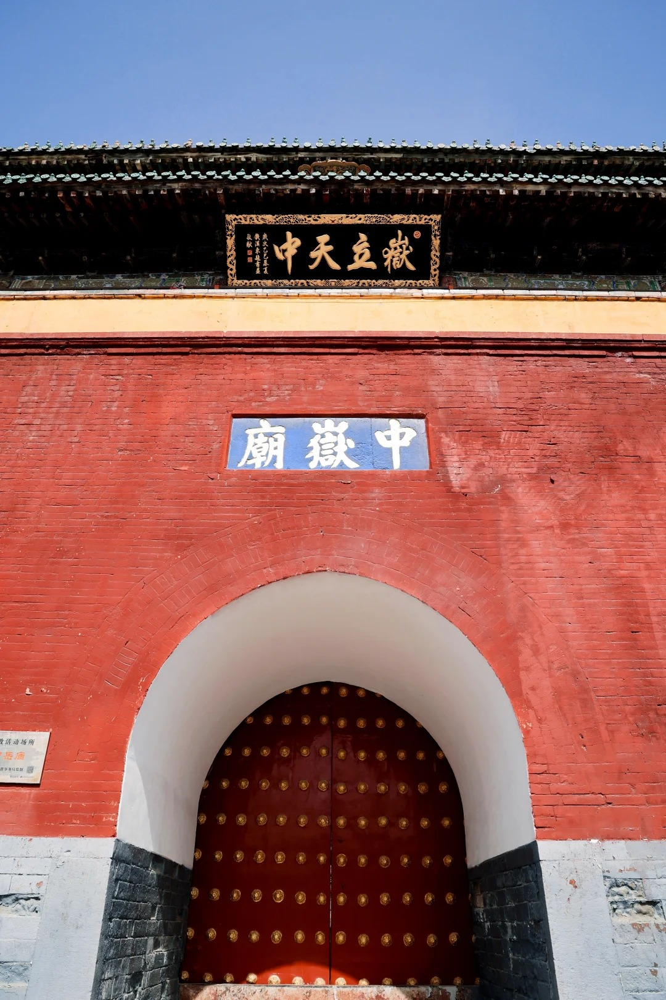
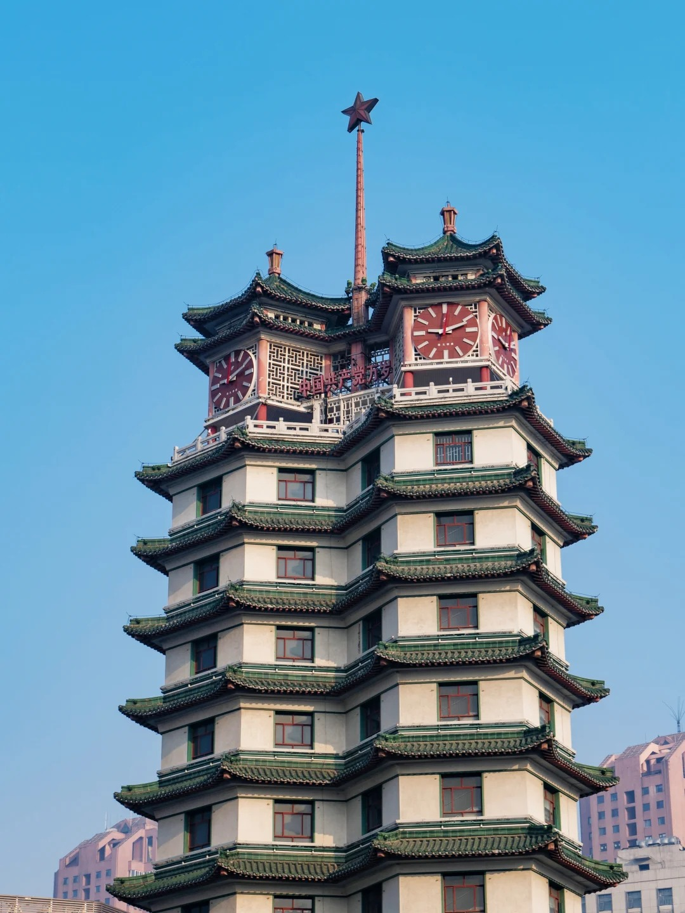

Six timeless landmarks where history breathes and legends live.

UNESCO Heritage
Shaolin Temple
Nestled at the foot of Songshan Mountain, the Shaolin Temple has stood for over 1,500
years. It is the birthplace of Chan (Zen) Buddhism and the legendary Shaolin Kung Fu,
attracting pilgrims and martial arts enthusiasts from every corner of the world.

Natural Wonder
Yellow River Scenic Area
Home to the majestic 106-meter-tall statues of Emperors Yan and Huang, this scenic zone
offers breathtaking panoramas of the mother river of Chinese civilization.
Cultural Gem
Henan Museum
Designed to resemble an ancient astronomical observatory, this museum houses over 130,000
artifacts spanning China's 5,000-year history, including priceless oracle bones and
bronze vessels.

Ancient Academy
Songyang Academy
One of the four great ancient academies of China, Songyang Academy dates back to 484 AD.
Surrounded by ancient cypresses, it remains a monument to the pursuit of knowledge
through the ages.

Sacred Shrine
Zhongyue Temple
Situated at the southern foot of Mount Song, Zhongyue Temple is one of China's oldest and
grandest Taoist temples. Its architectural style mirrors that of the Forbidden City,
earning it the title "Little Palace" among Taoist believers.

City Icon
Erqi Memorial Tower
The iconic twin-tower monument in the heart of downtown Zhengzhou, commemorating the
Great Railway Workers' Strike of 1923. It stands as the enduring symbol of the city's
resilient spirit.
Ready to Taste Zhengzhou?
From ancient noodles to fiery stews, the flavors of Zhongyuan await.